Chapter 4 Examples
Here, several worked examples of geode are provided to illustrate typical usage. Each example is structured as a common workflow, with setup, importation of data, plotting and analysis. The R code shown in the boxes can be copied directly to your RStudio session if you wish to run these examples yourself.
4.1 Example 1: Importing and wrangling data
4.1.1 Background
This example illustrates basic usage of the geode package, focusing on the importation and manipulation of data. We import geographic and attribute data using freely available Statistics Canada 2016 Census data. These data are then ‘wrangled’ as needed and joined together. Finally, basic plots are generated.
Note that each function in the geode package has an associated help file. A help file can be accessed simply by including a ‘?’ before the name of the function of interest.
For example, we can access the help file for the geo_import() function using:
?geo_importEach help file provides a simple introduction to the function and describes the necessary syntax for using that function.
The data files used in this example come from the Statistics Canada 2016 Census. These files are freely available online and can be directly downloaded (and unzipped) in R as shown below. Make sure to update the ‘download_folder’ path shown below to an appropriate location on your computer.
# specify location and filename for input shapefile data
# Statistics Canada 2016 Census Dissemination Block boundaries
stcn_url <- "http://www12.statcan.gc.ca/census-recensement/2011/geo/bound-limit/files-fichiers/2016"
infile_zip <- "ldb_000b16a_e.zip"
download_folder <- "C:/Users/Michael/Documents/R/data"
# specify location for input attribute data
# Statistics Canada 2016 Census Geographic Attribute file
stcn_url_attr <- "http://www12.statcan.gc.ca/census-recensement/2016/geo/ref/gaf/files-fichiers"
infile_attr_zip <- "2016_92-151_XBB_csv.zip"These files only need to be downloaded and unzipped once.
# download and unzip the input data
download.file(url = paste(stcn_url, infile_zip, sep = "/"),
destfile = paste(download_folder, infile_zip, sep = "/"))
unzip(zipfile = paste(download_folder, infile_zip, sep = "/"),
exdir = download_folder)
download.file(url = paste(stcn_url_attr, infile_attr_zip, sep = "/"),
destfile = paste(download_folder, infile_attr_zip, sep = "/"))
unzip(zipfile = paste(download_folder, infile_attr_zip, sep = "/"),
exdir = download_folder)4.1.2 Setup
Load the geode package. This makes all geode functions available for use in your current R session.
library(geode)Before importing data, we must specify the names and locations of the shapefiles or attribute files we wish to import. It is convenient to define these as R objects at the beginning of your R script (e.g., storing the input directory path in the object ‘indir’) so that they can be easily modified later. As before, you must modify the input directory path (‘indir’) shown below to match the location on your computer where these two files have been saved.
indir <- "C:/Users/Michael/Documents/R/data"
infile_shp <- "ldb_000b16a_e.shp"
infile_attr <- "2016_92-151_XBB.csv"4.1.3 Data importation
We import a basic shape or attribute file using the geo_import() function and only two required arguments: path and filetype.
# shapefile
my_shp <- geo_import(path = paste(indir, infile_shp, sep = "/"),
filetype = "spatial")
# attribute file
my_attr <- geo_import(path = paste(indir, infile_attr, sep = "/"),
filetype = "attribute")From the geo_import() help file, we see that two optional arguments are available: simplify and validity_check. These have not been specified in the code above and are therefore set automatically at their default values (i.e., do not simplify or run a validity check during import).
We can now view our imported files using any of the standard approaches, for example:
my_shp
tibble::glimpse(my_shp)Shapefiles are imported as a ‘simple features’ data object. These data objects also contain key information about the geometry type, the bounding box dimensions and projected coordinate reference system (CRS). This information is shown when the shapefile is viewed in R.
Simple feature collection with 489676 features and 27 fields
geometry type: MULTIPOLYGON
dimension: XY
bbox: xmin: 3689439 ymin: 659338.9 xmax: 9015737 ymax: 5242179
projected CRS: PCS_Lambert_Conformal_Conic
First 10 features:
DBUID DBRPLAMX DBRPLAMY PRUID PRNAME CDUID
1 10010202002 8979444 2148775 10 Newfoundland and Labrador / Terre-Neuve-et-Labrador 1001
2 10010203001 8979186 2149065 10 Newfoundland and Labrador / Terre-Neuve-et-Labrador 1001
3 10010204001 8979382 2148616 10 Newfoundland and Labrador / Terre-Neuve-et-Labrador 1001
4 10010204002 8979490 2148537 10 Newfoundland and Labrador / Terre-Neuve-et-Labrador 1001
5 10010204004 8979255 2148525 10 Newfoundland and Labrador / Terre-Neuve-et-Labrador 1001
6 10010204005 8979610 2148480 10 Newfoundland and Labrador / Terre-Neuve-et-Labrador 1001
7 10010206001 8978939 2149068 10 Newfoundland and Labrador / Terre-Neuve-et-Labrador 1001
8 10010206003 8978866 2148511 10 Newfoundland and Labrador / Terre-Neuve-et-Labrador 1001
9 10010206004 8978899 2148301 10 Newfoundland and Labrador / Terre-Neuve-et-Labrador 1001
10 10010206012 8978496 2148545 10 Newfoundland and Labrador / Terre-Neuve-et-Labrador 1001Note that imported shapefiles should always contain a ‘geometry’ column that specifies the vertices of the geographic boundaries. Attribute files can contain any information associated with the geographies in the shapefile (e.g., income, population size, etc.).
An overview of functions for manipulating simple features data in R can be found in the cheat sheet for the sf package:
https://github.com/rstudio/cheatsheets/raw/master/sf.pdf
We may wish to know the size (memory usage) of the imported file, particularly because shapefiles may be very large and difficult to manage. We can get file size using the R function object.size().
object.size(my_shp)
object.size(my_attr)4.1.3.1 Simplifying a shapefile during importation
We can reduce the size and memory usage of a shapefile by specifying the simplify option in geo_import. This may be helpful for generating a more manageable and efficient working file. However,it should be noted that simplification (which removes vertices from the geographic boundaries) may affect spatial calculations so should be used with care.
Also, note that importing and simplifying takes about 3x longer than importing alone.
my_shp_simple <- geo_import(path = paste(indir, infile_shp, sep = "/"),
filetype = "spatial",
simplify = TRUE)Simplifying a shapefile usually reduces the object size by at least half, but often more.
# what is the size of the simplified shapefile?
object.size(my_shp_simple)4.1.4 Data wrangling
Once a file has been imported, it can be cleaned, subsetted, transposed, etc. as needed and linked to other data. For most data wrangling, we use functions from the tidyverse package.
Further details on data wrangling functions can be found at the tidyverse website (https://www.tidyverse.org/) and in the cheat-sheets for data wrangling and data transformation:
https://rstudio.com/wp-content/uploads/2015/02/data-wrangling-cheatsheet.pdf
https://github.com/rstudio/cheatsheets/raw/master/data-transformation.pdf
# if you have not already done so, first download and install the tidyverse package
install.packages("tidyverse")
# now, load the package so that the functions are available for use in your R session
library(tidyverse)We might start, for example, by subsetting the shapefile to only one province (e.g., Ontario) and keeping only certain selected variables.
my_shp_on <- my_shp %>%
filter(PRNAME == 'Ontario') %>%
select(PRNAME, DBUID, ERNAME, FEDNAME, CMANAME, geometry) %>%
mutate(DBUID = as.numeric(DBUID)) # reformat variable DBUID as numeric
glimpse(my_shp_on)Note that the dissemination block ID variable ‘DBUID’ was originally formatted as a character variable, but we have reformatted it above to be numeric. Later, we will join the geographic and attribute data using this variable as a linkage key, so it is helpful if it has a consistent (numeric) format.
We then may wish to wrangle our attribute data. For example, we might subset the attribute file to the matching province used in our shapefile and then select certain key variables. In the ‘select’ function we also rename these variables to be more user-friendly and/or to match the variable names in our shapefile.
my_attr_on <- my_attr %>%
filter(`PRname/PRnom` == 'Ontario') %>%
select(DBUID = `DBuid/IDidu`,
DBpop = `DBpop2016/IDpop2016`,
DBtdwellings = `DBtdwell2016/IDtlog2016`,
DBudwellings = `DBurdwell2016/IDrh2016`,
DBarea = `DBarea2016/IDsup2016`)Finally, we may wish to link our geographic (shapefile) data and attribute data by joining on a common variable. In this case, we join based on the Dissemination Block ID
my_data_on <- my_shp_on %>%
left_join(my_attr_on, by = "DBUID")
glimpse(my_data_on)Now that we have linked geographic boundary and attribute data, population size, dwelling counts and other metrics are available for each region. We can generate a quick map of population size, for example, using geo_plot(). We first subset the data to include only the Guelph region.
my_data_guelph <- my_data_on %>%
filter(CMANAME == 'Guelph')
geo_plot(data = my_data_guelph,
geography_col = DBpop,
plot_type = 'choropleth',
legend_title = "Population size")Note that data wrangling functions can be nested within geode functions, if desired. For example, we could have created the above plot simply by subsetting the Ontario data within the geo_plot() function: rather than create a separate data object for Guelph, we filter the Ontario data as we plot to include only those rows for the Guelph census metropolitan area (CMA).
geo_plot(data = filter(my_data_on, CMANAME == 'Guelph'),
geography_col = DBpop,
plot_type = 'choropleth',
legend_title = "Population size")A wide variety of functions are available for wrangling data in R – an overview can be found in the tidyverse cheat sheet:
https://rstudio.com/wp-content/uploads/2015/02/data-wrangling-cheatsheet.pdf
4.1.5 Data export
Finally, we can export our new linked geodata to a file for future use. We make use of the geo_export() function, which allows us to output data as a shapefile, an excel workbook, or a SAS data file. Note that because our geodata contains a geometry column (which specifies the the vertices of our geographic boundaries), we must export as a shapefile.
# specify path and name of output file
outfile <- "C:/Users/Michael/Documents/R/working dir/data/guelph_db"
# export as a shapefile
geo_export(my_data_guelph,
path = outfile,
filetype = "shp")4.2 Example 2: mapping and proximity analysis
4.2.1 Background
This example illustrates basic usage of the geode package, focusing on creation of plots and running a proximity analysis. Here, we make use of the geographic boundary data for BC’s Community Health Service Areas (CHSA) and the point locations of BC acute care hospitals. These data files are freely available through DataBC:
https://catalogue.data.gov.bc.ca/dataset/community-health-service-areas-chsa
https://catalogue.data.gov.bc.ca/dataset/hospitals-in-bc
Help files for geode functions can be accessed simply by including a ‘?’ before the name of the function of interest. In this example, we focus on the functions geo_plot() and geo_distance().
?geode::geo_plot
?geode::geo_distanceNote that in R, if a package has been installed but not loaded, we must specify the package name and the function name (package_name::function_name) in order to use that function or access its help file. Once a package has been loaded, we only need to specify the function name.
4.2.2 Setup
As always, we begin by loading the geode package.
library(geode)As in Example 1, we also make use of the tidyverse package for data manipulation (‘wrangling’). The geode package has been designed so that it is completely compatible with all tidyverse functions.
library(tidyverse)We specify the locations and names of data files to be imported. Recall that you must modify the input directory path (‘indir’) shown below to match the location on your computer where the input files have been saved.
indir <- "C:/Users/Michael/Documents/R/working dir/data"
infile_boundaries <- paste(indir, "CHSA_2018.shp", sep = "/")
infile_hosp <- paste(indir, "hlbc_hospitals.csv", sep = "/")4.2.3 Importing data
We begin by importing the geographic boundary data (BC community health service areas) using the geo_import() function. We may simplify the shapefile (i.e., reduce the file size by removing vertices) for the purposes of creating a smaller, more efficient, working file. However, for generating final calculations and plots it is advisable to use the unsimplified (simplify = FALSE) file.
bc_geo <- geo_import(path = infile_boundaries,
filetype = 'spatial',
simplify = TRUE)Next, we import the hospital location data. This originates from a generic csv file, so we specify that this is ‘attribute’ data, not ‘spatial’ data.
bc_hosp <- geo_import(path = infile_hosp,
filetype = 'attribute')We may wish to do some data wrangling in order to make these input files cleaner and easier to work with. As in Example 1, we use the tidyverse function select() to keep only those variables needed for analysis and to rename them as appropriate for our proximity analysis. Recall, the geo_distance() function requires the attribute data to have an ‘id’ column, as well as point locations identified by column names ‘x’ and ‘y.’
bc_geo <- select(bc_geo, CHSA_Name, LHA_Name, HSDA_Name, HA_Name, geometry)
bc_hosp <- select(bc_hosp, HA_Name = RG_NAME, id = SV_NAME, x = LONGITUDE, y = LATITUDE)Finally, we will use the tidyverse filter() function to create new subsets of both datasets that include only those rows corresponding to the Fraser Health region of BC. We will use these subsets later in our analysis.
fraser_geo <- bc_geo %>% filter(HA_Name == 'Fraser')
fraser_hosp <- bc_hosp %>% filter(HA_Name == 'Fraser Health Authority')4.2.4 Creating maps
4.2.4.1 Choropleth maps
Often we wish to create quick and simple maps from our data, the most common being a static choropleth map. In geode, this requires only minimal coding using the geo_plot() function. We only need to specify the name of the imported data (data =) being mapped, the name of the data variable (geography_col =) identifying the geographic regions we wish to map, and the type of plot we wish to generate (in this case a plot_type = 'choropleth' map). The remaining arguments shown here (plot_title = and legend_title =) are optional.
geo_plot(data = bc_geo,
geography_col = HA_Name,
plot_type = 'choropleth',
plot_title = 'Health Authorities of British Columbia',
legend_title = 'Health Authority')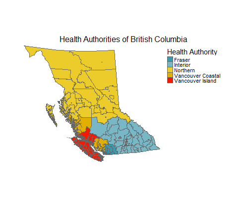
Although static images are useful for publications, interactive maps can be a powerful way to explore and communicate the data. Here, we need only specify the option interactive = TRUE, which places our data against interactive background layers (similar to those used in Google Maps) that allow us to zoom in and out and obtain information by hovering over an area. Here we use the hover_id option to specify that the values shown when hovering over a region are those found in the data column ‘CHSA_Name’ (if we had excluded this option, the hover-over values would be those found in the geography_col, i.e., the HSDA_Name values). Note that we have also set the transparency of our data layers to be 50% (transparency = 0.5) so that we can see some of the background detail through our shading.
geo_plot(data = bc_geo,
geography_col = HSDA_Name,
plot_type = "choropleth",
legend_title = 'Health Service Delivery Areas',
transparency = 0.5,
hover_id = CHSA_Name,
interactive = TRUE)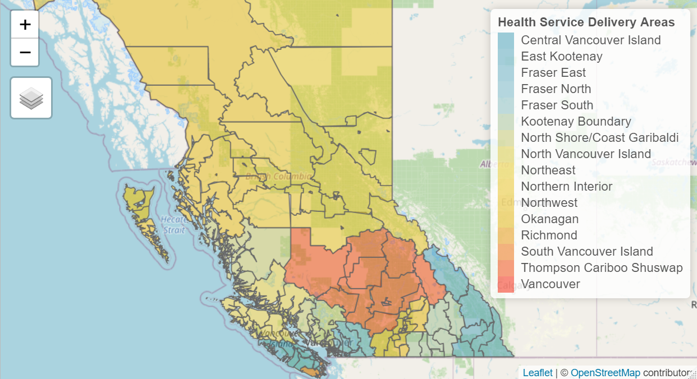
4.2.4.2 Pointmaps
In oder to map point locations of interest (e.g., hospitals), we change the map type to be plot_type = 'pointmap' and specify the input data object containing our x-y locations using attribute_data.
geo_plot(data = bc_geo,
geography_col = HA_Name,
attribute_data = bc_hosp,
plot_type = 'pointmap',
plot_title = 'Locations of BC Hospitals',
legend_title = 'Health Authority')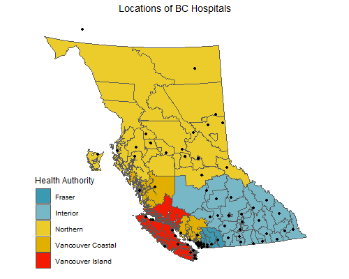
We can easily look at particular areas of interest using the subsetted data we created earlier. In this example, we look only at the Health Service Delivery Areas (HSDA) of the Fraser Health Authority. Optionally, we have specified legend_title = 'none, which removes the legend entirely.
geo_plot(data = fraser_geo,
geography_col = HSDA_Name,
attribute_data = fraser_hosp,
plot_type = 'pointmap',
plot_title = 'Locations of Hospitals in Fraser Health',
legend_title = 'none')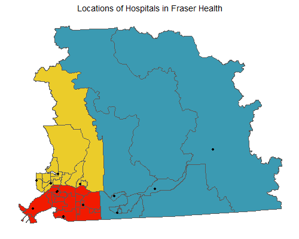
Note that for illustration purposes we created a separate data object containing only the data for Fraser Health. We did this as a separate step, but could have generated the same plot simply by applying the filter function to the geographic and attribute data within the geo_plot() function itself.
geo_plot(data = filter(bc_geo, HA_Name == 'Fraser'),
geography_col = HSDA_Name,
plot_type = 'pointmap',
attribute_data = filter(bc_hosp, HA_Name == 'Fraser Health Authority'),
legend_title = "HSDA",
plot_title = "Fraser Health Regions")All maps generated using geode can be exported as an image file or pdf for later use. As described in Chapter 2, the png(), bmp(), jpeg() or tiff() functions can be used to save a map image to your computer. The pdf() function similarly allows you to export a map as a pdf.
Using the above map of Fraser Health as an example, we export as both a png image and a pdf:
my_plot <- geo_plot(data = filter(bc_geo, HA_Name == 'Fraser'),
geography_col = HSDA_Name,
plot_type = 'pointmap',
attribute_data = filter(bc_hosp, HA_Name == 'Fraser Health Authority'),
legend_title = "HSDA",
plot_title = "Fraser Health Regions")
# save map as png image
png("C:/Users/Michael/Documents/R/working dir/output/output_plot.png")
print(my_plot)
dev.off()
# save map as pdf
pdf("C:/Users/Michael/Documents/R/working dir/output/output_plot.pdf")
print(my_plot)
dev.off()This example uses only the default options for the png() and pdf() functions. Users may specify a variety of arguments in these functions, including image size and resolution. The appropriate syntax for these options can be found by calling the help files for these functions: ?png or ?pdf.
4.2.5 Running a proximity analysis
One way in which we might analyze these data is to run a proximity analysis. In geode, a proximity analysis is implemented using the geo_distance() function. This function calculates the average distance, by region, to point locations of interest. Here we use it to determine average distance to hospital for each community health region in BC. The arguments to the geo_distance() function are the same as those encountered in geo_plot(), except we now specify the data object containing our point locations using location_data. Optionally, we put the legend on the right side of the plot (instead of the default left) using the legend_position argument.
geo_distance(data = bc_geo,
geography_col = CHSA_Name,
location_data = bc_hosp,
legend_title = "Distance (m)",
legend_position = "right",
plot_title = "Average Distance to Hospital in BC")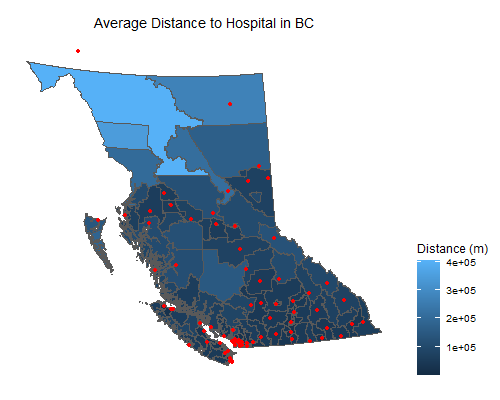
As before, we can look at any particular regions of interest, simply by using the subsetted data created earlier (or by applying the filter function directly within the geo_distance function). Here, we use the n_nearest argument to specify that the average distance calculation should be based on the nearest 2 hospitals rather than the default (n = 3).
geo_distance(data = fraser_geo,
geography_col = CHSA_Name,
location_data = fraser_hosp,
n_nearest = 2,
legend_title = "Distance (m)",
plot_title = "Average Distance to Hospital in Fraser Health")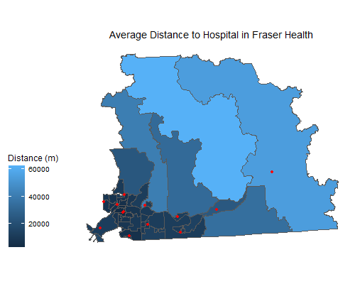
4.3 Example 3: Cluster detection
4.3.1 Background
This example illustrates the cluster detection functionality of the geode package. Here, we make use of the 2016 geographic boundary data for Dissemination Blocks (DB), freely available through Statistics Canada:
https://www12.statcan.gc.ca/census-recensement/2011/geo/bound-limit/bound-limit-2016-eng.cfm
In particular, we will use the Dissemination Block boundaries and population size data that we linked and exported in Example 1. Proceed first through Example 1 in order to create this data file.
Typically, health data are not publicly available at small geographies like Dissemination Blocks. For this example, we simulate mock health data for demonstrating cluster detection.
Recall that help files for geode functions can be accessed simply by including a ‘?’ before the name of the function of interest. In this example, we focus on the geo_detect() function.
?geode::geo_detect4.3.2 Setup
Begin by loading the geode and tidyverse packages.
library(geode)
library(tidyverse)We also specify the location and name of data file to be imported.
Recall that you must modify the input directory path (‘indir’) shown below to match the location on your computer where the file from Example 1 (guelph_db.shp) was saved.
indir <- "C:/Users/Michael/Documents/R/working dir/data"
infile <- "guelph_db.shp"4.3.3 Importing data
We import the example geodata using the geo_import() function. Note how we use the paste function here to efficiently combine the input directory path and input filename within the importation function.
guelph_geo <- geo_import(path = paste(indir, infile, sep = "/"),
filetype = 'spatial')Examine the structure of the geodata. Note that each Dissemination Block (data row) includes information on population size, which we will use in our cluster detection methods.
glimpse(guelph_geo)4.3.4 Simulating health event data
For illustrative purposes, we generate a simple distribution of health events (e.g., numbers of cases) using the negative binomial function rnbinom(). The size of the distribution is the number of DBs (data rows) in the guelph_geo dataset. We can look at the distribution by generating a simple histogram using the function hist().
events <- tibble(cases = rnbinom(n = nrow(guelph_geo), size = 20, mu = 0.5))
hist(events$cases)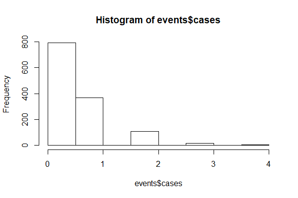
We see that many regions have zero events, but a few have event counts up to four. This distribution is meant to illustrate the occurrence of some rare event.
Next, we bind the simulated health event counts (‘cases’) to our geodata using the function bind_cols(). Note that we also make a few adjustments to the distribution and population data to ensure that: i) DBs with zero population size have zero cases, ii) the minimum population size is greater than zero for all DBs (see Chapter 3 for more information on cluster detection and small population sizes), and iii) that case counts are not greater than population size in any DB.
guelph_data <- guelph_geo %>%
bind_cols(events) %>%
mutate(cases = ifelse(DBpop == 0, 0, cases)) %>% # regions with zero population must have zero cases
mutate(DBpop = ifelse(DBpop == 0, 5, DBpop)) %>% # reset min population size to be 5 per region
mutate(cases = ifelse(cases>DBpop, cases/2, cases)) # ensure cases are not > than population sizeFinally, let’s generate some quick maps of our simulated case counts. We can plot the entire Guelph region, but also generate a ‘zoomed-in’ map for just the city of Guelph. Note that in the second plot, we simply embed the filter() function within the plot function to subset the data to only those rows for the city of Guelph.
# map of entire study region
geo_plot(data = guelph_data,
geography_col = cases,
plot_type = 'choropleth',
legend_title = "Case counts",
plot_title = "Census Metropolitan Area of Guelph")
# map of only the city of Guelph region
geo_plot(data = filter(guelph_data, FEDNAME == 'Guelph'),
geography_col = cases,
plot_type = 'choropleth',
legend_title = "Case counts",
plot_title = "City of Guelph")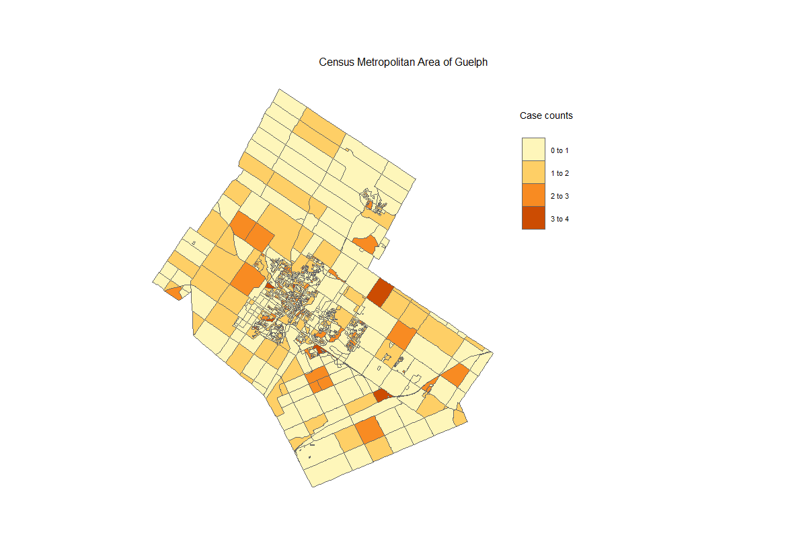
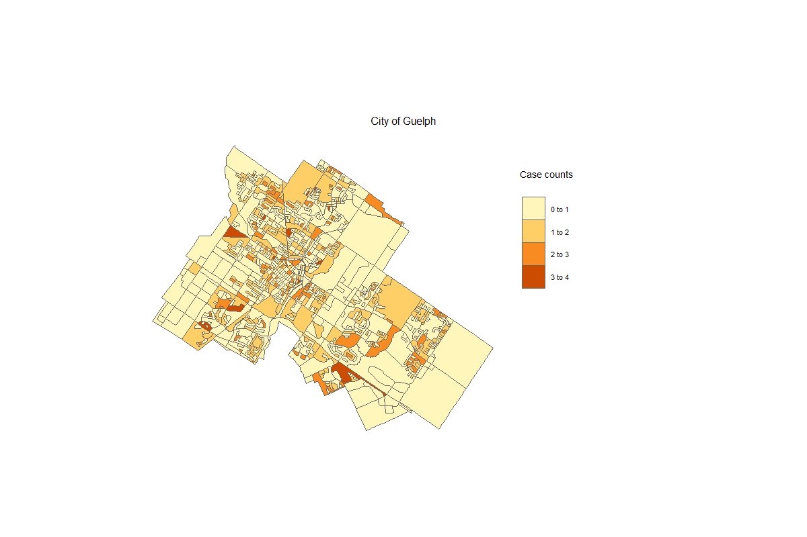
4.3.5 Detecting clusters
In order to run our cluster detection algorithm using the geo_detect() function, we must at least specify the geodata and the columns corresponding to the event (case) counts and the population sizes for each region. The default settings are to run the Kulldorff binomial model and generate an interactive plot as the output; hence, these do not need to be specified, but have been included here for clarity.
Note that statistical significance of the clusters is calculated using simulation methods, which may require several minutes of computation time depending on the size of the dataset.
geo_detect(dat = guelph_data,
counts = cases,
pop = DBpop,
method = 'kulldorff_binomial',
plot = TRUE)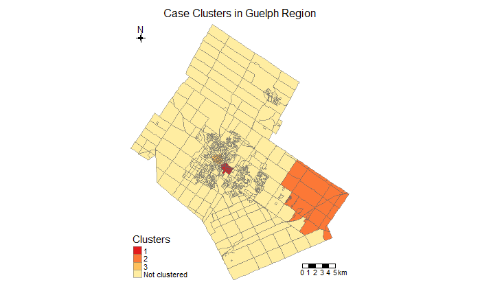
As described above, these are purely artificial data and do not represent any real health events for this region.
The alternative method is the Kulldorff Poisson model, which can be run following the same syntax as above. This model allows us to specify the expected event counts for each region, or to have them calculated automatically (which we do here, by specifying expected_counts = NULL). For this example, we do not request a plot output (plot = FALSE), so the function instead provides the full listing of the Dissemination Blocks included in the top 3 clusters.
geo_detect(dat = guelph_data,
counts = cases,
pop = DBpop,
expected_counts = NULL,
method = 'kulldorff_poisson',
plot = FALSE)Notice that the algorithm detects significant clusters in the city of Guelph region, but that these can be hard to visualize in a map of the entire region because the urban Dissemination Blocks are so small. It may therefore be useful to run a separate cluster detection analysis on just the city of Guelph region. As before, we can do this simply by embedding the filter() function within the detection function to subset to only those rows for the city of Guelph.
geo_detect(dat = filter(guelph_data, FEDNAME == 'Guelph'),
counts = cases,
pop = DBpop,
method = 'kulldorff_binomial',
plot = TRUE)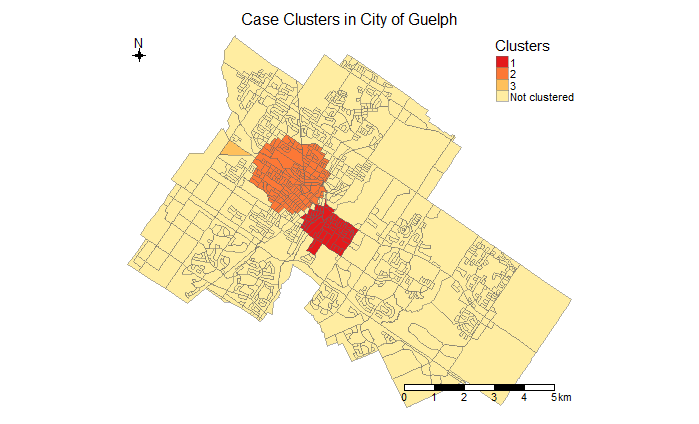
As with geo_plot() the transparency of the choropleth map can be adjusted to reveal more or less of the background reference layer (using the transparency = argument), and the information shown when hovering over a region can be modified (any column in the input dataset can be specified with the hover_id = argument).
As before, all of these maps can be exported for further use. Using the above cluster map for Guelph as an example, we could export it as either an image or pdf:
my_clusters <- geo_detect(dat = filter(guelph_data, FEDNAME == 'Guelph'),
counts = cases,
pop = DBpop,
method = 'kulldorff_binomial',
plot = TRUE)
# save map as png image
png("C:/Users/Michael/Documents/R/working dir/output/cluster_output_plot.png",
height = 4, width = 6, res = 300)
print(my_clusters)
dev.off()
# save map as pdf
pdf("C:/Users/Michael/Documents/R/working dir/output/cluster_output_plot.pdf")
print(my_clusters)
dev.off()